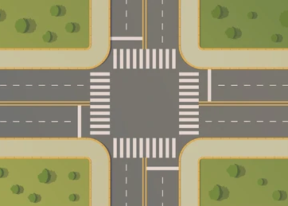

This problem is a Mooshak version of a SPOJ Problem.

Japan plans to welcome the ACM ICPC World Finals and a lot of roads must be built for the venue. Japan is a tall island with \(N\) cities on the East coast and \(M\) cities on the West coast. \(K\) superhighways will be build. Cities on each coast are numbered \(1, 2, \ldots\) from North to South. Each superhighway is a straight line and connects a city on the East coast with a city of the West coast.The funding for the construction is guaranteed by ACM. A major portion of the sum is determined by the number of crossings between superhighways. At most two superhighways cross at one location. Write a program that calculates the number of the crossings between superhighways.
Each test case starts with three numbers: \(N, M, K\). Each of the next \(K\) lines contains two numbers – the numbers of cities connected by the superhighway. The first one is the number of the city on the East coast and second one is the number of the city of the West coast. A pair of cities will have at most one highway connecting them.
A line with one integer: the number of crossings.
| Example Input | Example Output |
3 4 4 1 4 2 3 3 2 3 1 |
5 |
The 5 crossings are:
The only pair of roads that do not cross each other is (3,1) and (3,2).